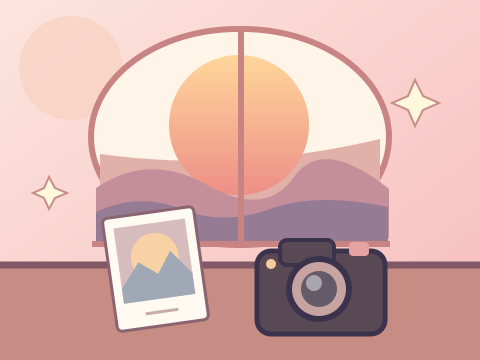
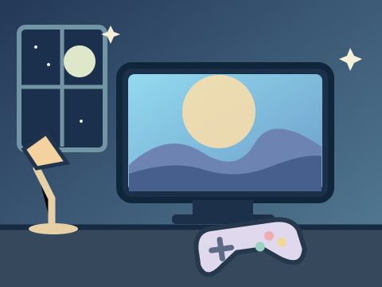

01 / 学习中
学习和研究
计算机技术专业，研究方向主要是 AI 教育和时间序列预测。最近在做检索增强预测相关的实验。
AI / RESEARCH目前主要在做人工智能相关的研究，方向包括时间序列预测和 AI 教育。平时也会拍照、玩游戏，偶尔出 Cos。
01 / GET TO KNOW ME
平时大部分时间都在和代码、论文打交道。休息的时候喜欢拍照、看演出，或者和朋友一起打游戏。
计算机技术专业，研究方向主要是 AI 教育和时间序列预测。最近在做检索增强预测相关的实验。
AI / RESEARCH喜欢摄影、Cosplay 和 ACG。游戏会玩 OW、Apex、怪物猎人之类的，有机会也想多去参加活动。
LIFE / HOBBIES02 / CURRENT EXPLORATIONS
简单放几个最近在做的方向。
点左右箭头可以切换。
TIME-SERIES FORECASTING
最近在研究检索增强的时间序列预测。历史片段看起来相似，后面的走势却不一定一样，所以想弄清楚什么时候检索有用、什么时候会拖后腿。
小提示：轮播区域获得键盘焦点后，也可以使用左右方向键切换。
03 / LITTLE MOMENTS
除了写代码和看论文，
平时也会做这些事情。



04 / TECH FOR GOOD
做 AI 教育相关研究时，会经常想到技术到底能给课堂带来什么帮助。我也希望自己做的东西能尽量简单、好用，所以这个页面加了键盘操作、图片文字说明和减少动画的设置。
往下留个言05 / LEAVE A NOTE
想说什么都可以。这里接的是 GitHub 评论，留言会公开显示在页面上，我也可以看到并回复。
需要用 GitHub 账号登录才能留言。如果评论框没有加载出来，可以从下方链接打开留言区。